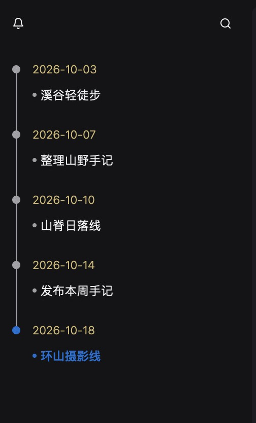

便签墙
让灵感，贴在眼前。
自由摆放 · 彩色分类 · 桌面置顶
便签的更多用法
选择颜色，整理位置与尺寸。需要常驻提醒时，可以把便签定住到屏幕右缘，或挂到正在看的文件上。
LOCAL INTELLIGENCE. NATIVE POWER.
灵感、待办、创作，一处相连。
让魔法球，找到你的下一步。
为便签选择颜色，整理位置与尺寸。需要常驻时，可以定住到屏幕右缘，或挂到当前文件。
月历串起日常记录。同一天可以写多条笔记，复用模板，并为重要事项设置提醒。
日视图左侧按日期串起笔记，点击记录即可打开。需要时也可以把一篇笔记盯住，浮在其他应用之上。
块编辑器旁打开公众号手机预览，按竖屏检查标题、段落和主题色。确认排版后再复制或发布。
Rust、Go、Python 编辑，结合语言服务完成导航与诊断；项目内还可使用搜索、Git 和真实终端。
在 Notebook 中编辑与执行单元，查看实际输出；配合 Python 环境管理和实验记录，保留探索过程。
连接 SQLite、PostgreSQL、MySQL、MariaDB、ClickHouse 或 Redis，按连接浏览对象，编写 SQL，查看和导出结果。
查看和编辑 CSV、TSV，选中单元格或整行后复制，也可以切换成只读文本。
JSON、时间戳、Cron、编码、二维码、正则等 15 项工具集中在工具集里。密码库单独打开。
不登录也能使用。设置里可以切换外观、八套文稿排版和中英文界面。登录后管理设备，并选择要同步的内容。
01 / CAPTURE. ORGANIZE. DO.
02 / DAYS WORTH KEEPING
日历记录当下，时间线连接过往。

同一天记录多条笔记，复用模板并设置提醒。日视图左侧按日期串起记录，点击即可打开。重要笔记可以盯住，浮在其他应用之上。
03 / YOUR NEXT MOVE, WITHIN REACH
单击展开工具，双击说出想法。
表达学习可关闭、可清除，数据留在本机。
JSON、时间戳、Cron、进制转换、Base64 文本与图片、GZip、JWT、二维码、URL 编解码、哈希、密码生成、UUID、图片转换、正则表达式，共 15 项。密码库是独立模块，不在这个列表里。
密码库把加密后的密码字段留在本地，登录后可选择同步密码库。公众号发布凭据也放在密码库，但只留在本机，不进入内容同步。模型 API Key 同样不进入内容同步；模型服务为可选配置，需要时再连接。
04 / A SPACE FOR EVERY IDEA
.syd 画布 · Excalidraw · XMind
用形状、连线和文字组织灵感，也可以在画板里放下 Markdown 卡片。原生 .syd 画布与 Excalidraw 可编辑保存；XMind 支持读取、编辑与保存。思维导图也可以直接打开。
手机预览 · 富文本复制 · 草稿同步
公众号同步需配置账号，发布由你确认。
在块编辑器里写作，用大纲跳转，也可以在正文里查找。支持 Mermaid 图和数学公式。八套排版主题同时用于编辑和公众号复制。写作时可打开手机预览，按竖屏检查标题、段落与主题色；配置自己的公众号后，还可预检图片、保存草稿，并在确认后发布。最多保存 10 个公众号。
05 / BUILD. RUN. DISCOVER.
代码、终端、数据和自动化，接住下一步。
Rust、Go、Python 高亮、项目导航与语言服务诊断。真实 PTY 终端支持独立会话，可按环境运行 Agent CLI，也可以管理 SSH 连接。代码项目可以查看变更、暂存、提交、分支、历史和差异。上方的 Git 画面是打开 go 工程后的提交历史和文件差异。
代码导航需要配置 rust-analyzer、gopls 或 Pyright。个人默认空间无需安装 Git。
用节点把命令、条件和通知连成一条流程。可以套用预置模板，手动运行，或按 Cron 定时执行，并用应用内通知、钉钉、飞书或企微提醒。
管理 Python 解释器、环境和依赖，连接 Jupyter 内核运行 Notebook，归档和比较实验记录。运行需要对应解释器和内核。
数据库工作台支持 SQLite、PostgreSQL、MySQL、MariaDB、ClickHouse 和 Redis，按连接展开对象树，补全 SQL，查看和导出结果。已保存的表格文件可以用 DuckDB 做可取消的 SQL 分析。
查看、编辑 CSV / TSV，预览、旋转、压缩和转换图片；macOS 支持 PDF 阅读、高亮与批注。按文件名、正文或代码符号搜索，查看和恢复本地文件历史。
书库整理标签、收藏、评分和阅读进度。书架可导入 EPUB、PDF、AZW3、TXT、Markdown 和 CBZ，并能按书脊排开。上方画面是把 ebooks 仓库里的书导入后的书脊模式。阅读时左侧查看目录。词汇表按领域和词表管理条目，支持导入、导出。删除的内容可以在回收站恢复。
siyadao-cli 与桌面端共用真实工作区数据和操作，可以打开文件、管理内容或调用应用操作。结构化 JSON 输出便于接入脚本。
06 / PICK UP WHERE YOU LEFT OFF
本地开始，需要时再连接。
账号密码登录；关注公众号获取注册、找回密码的验证码，支持粘贴。登录后查看和管理设备。
待办、便签、日历、词汇表、文稿与画布、文件与附件、书库、书架、密码库、通用偏好。类别默认全部勾选；首次同步总开关关闭，由你确认并启用。随时关闭不需要同步的类别。
启用后，内容变更触发同步，也可手动立即同步。冲突时查看差异，选择保留本机或云端内容。
结构化记录同步最新状态；文件从同账号在线设备按需补齐，服务器只作临时中继。外部代码项目和本机窗口布局不参与同步。
同步不等同于永久云备份：原文件设备全部丢失、临时副本也已清理时，无法恢复文件。重要资料请另行备份。
MAKE ROOM FOR YOUR IDEAS
主下载走 GitHub，旁边的「备用」指向官网。菜单显示各平台可用安装包及真实版本。
发现更新时，标题栏目录位置出现蓝色下载图标。点击开始下载，悬停查看进度并可取消；失败可重试。受支持的 macOS DMG、Windows 安装 EXE 下载完成后，处理未保存内容，再自动替换并重启。其他包或无法写入的安装位置提供手动入口。
页面展示准备发布的新版本实际画面。下载菜单仍指向已经公开的安装包；新版本上线后会自动换成对应安装包，实际版本以菜单为准。